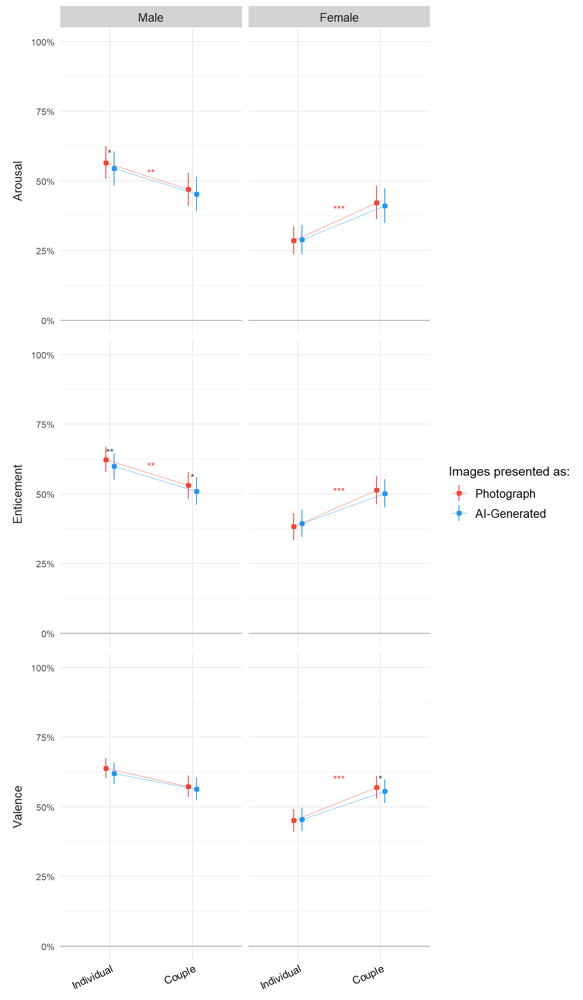
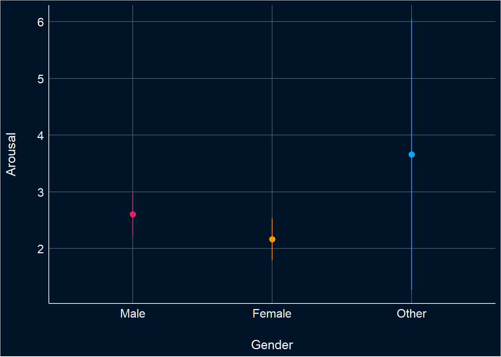
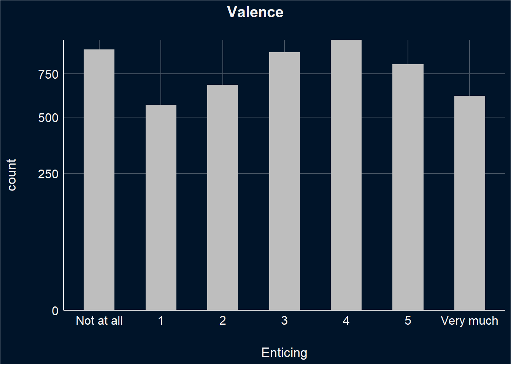
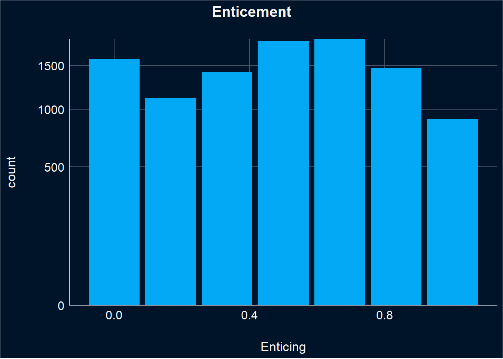
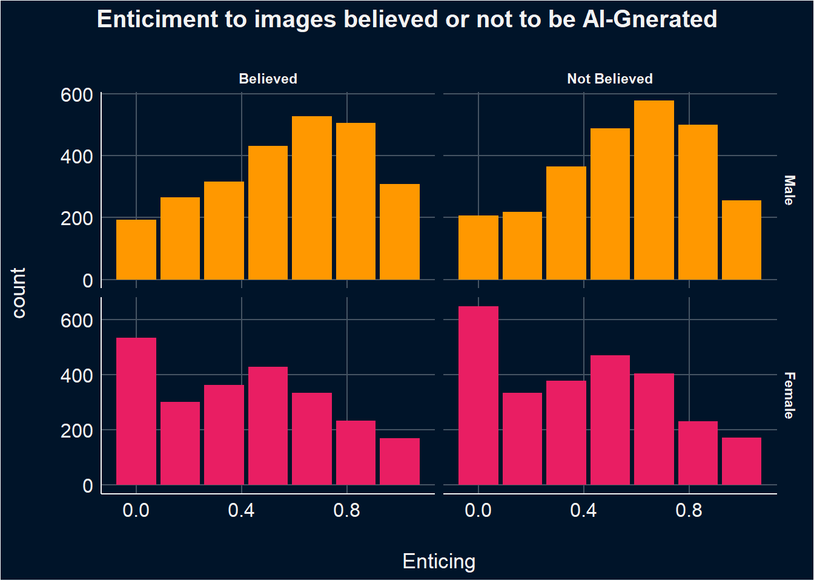
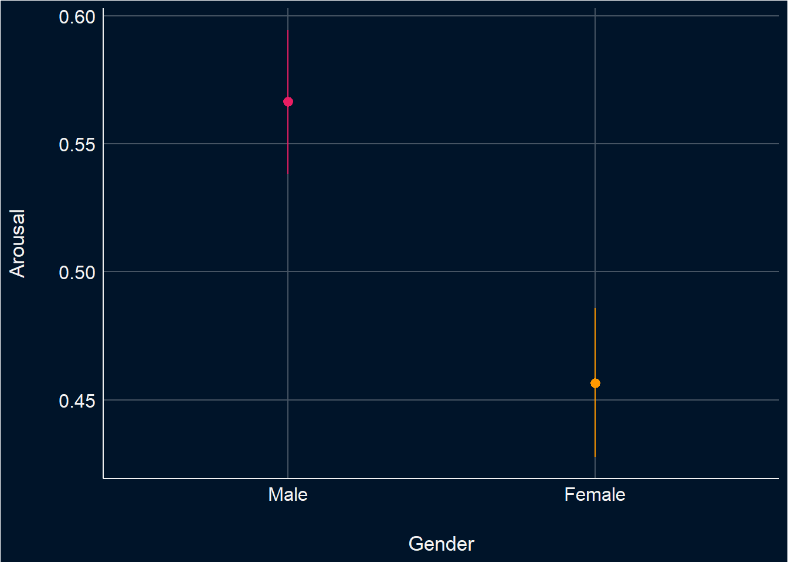

Code
library(tidyverse)
library(easystats)
library(patchwork)
library(ggside)
library(glmmTMB)
options(mc.cores = parallel::detectCores(),
brms.backend = "cmdstanr",
width = 300)library(tidyverse)
library(easystats)
library(patchwork)
library(ggside)
library(glmmTMB)
options(mc.cores = parallel::detectCores(),
brms.backend = "cmdstanr",
width = 300)notes: How about confidence on all AI and all photos
dfsub <- read.csv("../data/data_participants.csv")
df <- read.csv("../data/data.csv") |>
right_join(
select(dfsub, Participant, Mobile, starts_with(c("Feedback_","BAIT")), COPS_Frequency_2, SexualActivity,
-Feedback_Text),
by = "Participant"
) |>
mutate(Condition = fct_relevel(Condition, "Reality", "Fiction"),
Gender = fct_relevel(Gender, "Male", "Female", "Other"),
PornFrequency = as.numeric(as.factor(COPS_Frequency_2)),
GenderualActivity_num = as.numeric(as.factor(SexualActivity)),
ConditionBelief = case_when(
Condition == "Reality" & Realness > 0.5 ~ "True",
Condition == "AI-Fiction" & Realness < 0.5 ~ "True",
.default = "False",
)) |>
mutate(across(starts_with("Feedback_")& !matches("Feedback_AllRealConfidence|Feedback_AllFakeConfidence|Feedback_Enjoyment"), function(x) {fct_relevel(x, "False", "True")}))Warning: There was 1 warning in `mutate()`.
ℹ In argument: `across(...)`.
Caused by warning:
! 1 unknown level in `f`: Trueresults_table <- function(model, effects="fixed", filter=NULL) {
if("marginaleffects" %in% class(model)) {
model |>
parameters::parameters() |>
as.data.frame() |>
select(-Parameter, -SE, -S, z=Statistic, -Predicted) |>
insight::format_table() |>
parameters::display()
} else {
display(parameters::parameters(model, effects=effects, keep=filter))
}
}This section is about selecting the best model. Notably, all the stimuli presented are of an erotic nature.
Note to dom beta model does not make sense anymore, what else should we do?
arousal <- df |>
ggplot(aes(x=Arousal)) +
geom_histogram(fill="grey", position = "identity", binwidth = 0.5) +
scale_y_sqrt(expand = c(0, 0)) +
scale_x_continuous(breaks = (0:6), labels = c("Not at all", "1", "2", "3", "4", "5", "Very much")) +
labs(title = "Arousal") +
theme_abyss() +
theme(plot.title = element_text(hjust = 0.5, face="bold"))
arousal
Note: Model m3, which includes random intercepts and random slopes for Gender at the stimulus level, exhibits relatively high correlations between the random intercepts and slopes. This suggests that the random effects are strongly correlated, which could indicate overfitting.
# Get a sense of Random Factors
m1 <- glmmTMB::glmmTMB(Arousal ~ Gender + (1|Participant), data=df)
m2 <- glmmTMB::glmmTMB(Arousal ~ Gender + (1|Participant) + (1|Stimulus ), data=df)
m3 <- glmmTMB::glmmTMB(Arousal ~ Gender + (1|Participant) + (1+Gender|Stimulus ), data=df)
test_bf(m1,m2)
compare_performance(m1, m2)
# the model with participants and stimuli as random effecs seems to be the bestThis model evaluate ths the effects of Gender on Arousal, accounting for random variability due to participants and the stimuli (i.e., random effects).
The analysis revealed that on average women rate erotic stimuli significantly lower in arousal than men, while participants identifying as ‘other’ rate on average erotic stimuli higher than men, however this is not significant.
m_a <- glmmTMB::glmmTMB(Arousal ~ Gender + (1|Participant) + (1|Stimulus ),
data=df,
control = glmmTMB::glmmTMBControl(parallel = 8))
# control = glmmTMB::glmmTMBControl(optimizer=stats::optim, # nlminb, optim
# optArgs = list(method = "BFGS"), #Nelder-Mead, BFGS, CG
# parallel = 8))
results_table(m_a)| Parameter | Coefficient | SE | 95% CI | z | p |
|---|---|---|---|---|---|
| (Intercept) | 2.60 | 0.19 | (2.23, 2.98) | 13.61 | < .001 |
| Gender (Female) | -0.44 | 0.24 | (-0.90, 0.03) | -1.85 | 0.064 |
| Gender (Other) | 1.06 | 1.23 | (-1.35, 3.47) | 0.86 | 0.390 |
estimate_relation(m_a) |>
ggplot(aes(x=Gender, y=Predicted)) +
geom_pointrange(aes(ymin=CI_low, ymax=CI_high, color = Gender), position=position_dodge(width=0.5)) +
scale_color_manual(values=c("Male"="#E91E63", "Female"="#FF9800","Other"="#03A9F4"), guide="none") + labs(y="Arousal") +
theme_abyss()
valence <- df |>
ggplot(aes(x=Enticing)) +
geom_histogram(fill="grey", position = "identity", binwidth = 0.5) +
scale_y_sqrt(expand = c(0, 0)) +
scale_x_continuous(breaks = (0:6), labels = c("Not at all", "1", "2", "3", "4", "5", "Very much")) +
labs(title = "Valence") +
theme_abyss() +
theme(plot.title = element_text(hjust = 0.5, face="bold"),
legend.position = "none")
valence
This model evaluate ths the effects of Gender on Enticement, accounting for random variability due to participants and the stimuli (i.e., random effects). Notably, all the stimuli is erotic.
The analysis revealed that on average women rate erotic stimuli significantly lower in enticiment than men, while participants identifying as ‘other’ rate on average erotic stimuli higher than men. However, these differences were not statistically significant.
m_e <- glmmTMB::glmmTMB(Enticing ~ Gender + (1|Participant) + (1|Stimulus ),
data=df,
control = glmmTMB::glmmTMBControl(parallel = 8))
# control = glmmTMB::glmmTMBControl(optimizer=stats::optim, # nlminb, optim
# optArgs = list(method = "BFGS"), #Nelder-Mead, BFGS, CG
# parallel = 8))
results_table(m_e)| Parameter | Coefficient | SE | 95% CI | z | p |
|---|---|---|---|---|---|
| (Intercept) | 3.07 | 0.18 | (2.72, 3.41) | 17.34 | < .001 |
| Gender (Female) | -0.39 | 0.22 | (-0.83, 0.04) | -1.78 | 0.076 |
| Gender (Other) | 2.09 | 1.16 | (-0.17, 4.36) | 1.81 | 0.070 |
estimate_relation(m_e) |>
ggplot(aes(x=Gender, y=Predicted)) +
geom_pointrange(aes(ymin=CI_low, ymax=CI_high, color = Gender), position=position_dodge(width=0.5)) +
scale_color_manual(values=c("Male"="#E91E63", "Female"="#FF9800","Other"="#03A9F4"), guide="none") + labs(y="Arousal") +
theme_abyss()
valence <- df |>
ggplot(aes(x=Valence)) +
geom_histogram(fill="grey", position = "identity", binwidth = 0.5) +
scale_y_sqrt(expand = c(0, 0)) +
scale_x_continuous(breaks = (0:6), labels = c("Unpleasant", "1", "2", "3", "4", "5", "Pleasa")) +
labs(title = "Valence") +
theme_abyss() +
theme(plot.title = element_text(hjust = 0.5, face="bold"),
legend.position = "none")
valence
This model evaluate ths the effects of Gender on valence, accounting for random variability due to participants and the stimuli (i.e., random effects). Notably, all the stimuli is erotic.
The analysis revealed that on average women rate erotic stimuli significantly lower in arousal than men, while participants identifying as ‘other’ rate on average erotic stimuli higher than men,. None of these differences were statistically significant.
m_v <- glmmTMB::glmmTMB(Valence ~ Gender + (1|Participant) + (1|Stimulus ),
data=df,
control = glmmTMB::glmmTMBControl(parallel = 8))
# control = glmmTMB::glmmTMBControl(optimizer=stats::optim, # nlminb, optim
# optArgs = list(method = "BFGS"), #Nelder-Mead, BFGS, CG
# parallel = 8))
results_table(m_v)| Parameter | Coefficient | SE | 95% CI | z | p |
|---|---|---|---|---|---|
| (Intercept) | 3.29 | 0.17 | (2.96, 3.62) | 19.64 | < .001 |
| Gender (Female) | -0.35 | 0.21 | (-0.76, 0.07) | -1.64 | 0.101 |
| Gender (Other) | 1.41 | 1.10 | (-0.75, 3.57) | 1.28 | 0.202 |
estimate_relation(m_e) |>
ggplot(aes(x=Gender, y=Predicted)) +
geom_pointrange(aes(ymin=CI_low, ymax=CI_high, color = Gender), position=position_dodge(width=0.5)) +
scale_color_manual(values=c("Male"="#E91E63", "Female"="#FF9800","Other"="#03A9F4"), guide="none") + labs(y="Arousal") +
theme_abyss()